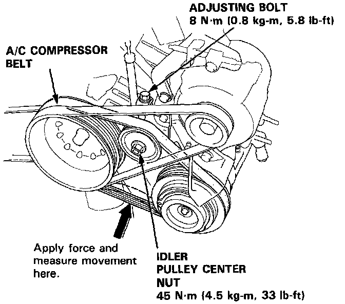
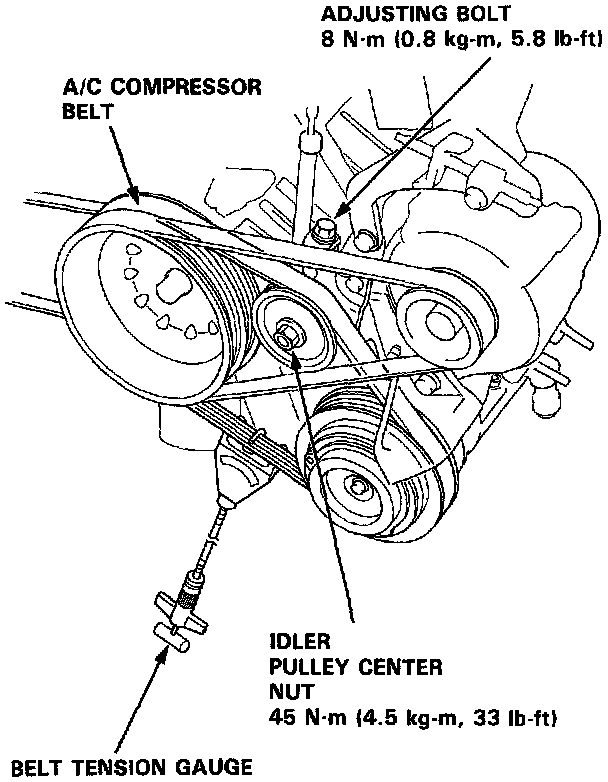
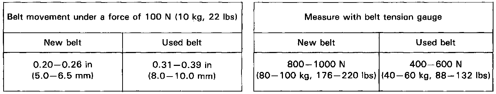

Drive Belt: Adjustments
Belt Deflection Measurement:

Belt Tension Measurement:

1. Loosen the idler pulley center nut and adjusting bolt.
2. Adjust the A/C compressor belt tension by turning the adjusting bolt.

3. Tighten the idler pulley center nut, then tighten the adjusting bolt securely.
- "New belt" refers to a belt which has been used less than five minutes on a running engine.
- "Used belt" refers to a belt which has been used on a running engine for five minutes or more.
NOTE: Check for belt damage. If necessary, replace the A/C compressor belt.